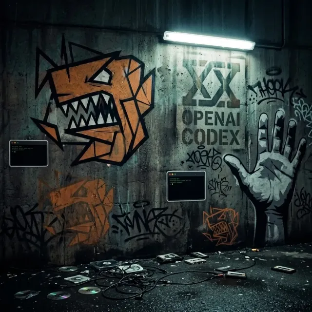
01 / TTR-001
Complexes on the Codex
Claude Code
- カバーは人物なしの「路地裏のグラフィティ壁」。アンバーの獣の顔を壁面に大小3つ、対角に色褪せた「OPENAI CODEX」のステンシル。dissの構図を壁だけで語らせた。
- 地面に傷だらけのCD、絡まったケーブル、カセット。Unixターミナル風のウィートペーストステッカーが唯一のテック要素。
- 低彩度＋アンバー1色、路地。シリーズの世界観はここが起点。
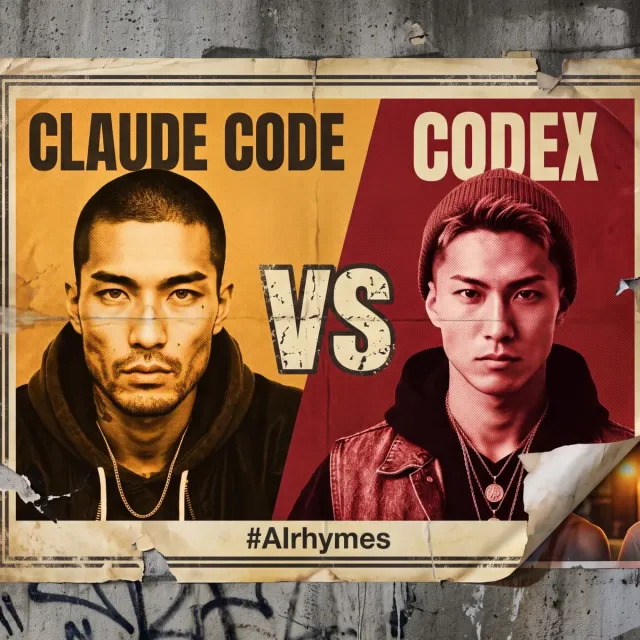
TechTalk Records / TTR-AL-001 / Archive
1st Album『Claude Code vs. Codex』
対戦カードは、この一枚。全18ラウンド、ノーカット。
会場は、お前のターミナル。
勝敗は、最後まで聴いたやつが決めろ。
01 — The Card
このアルバムは2人の架空のラッパーの物語である。まず、設定シートから2人を紹介する。
「異質だけど本質を外さない、ターミナルの王」
HOMEGROUND: 六本木 — 表通りの派手さじゃなく、一本裏の路地。「ここにいるけど、騒ぎには加わらない」
「地頭最強なのにコミュ障で報われない、噛みつき系の天才」
HOMEGROUND: 高円寺 — アンダーグラウンド、不器用な人が集まる街。六本木の「余裕」に対する「泥臭さ」
2人の関係性が dissから共闘へ変わっていく過程が、そのまま18曲の曲順になっている。設定の全文はリポジトリの content/artists/*/profile.md にある。
02 — By the Numbers
ディスクの外側に残った記録。制作の規模を、そのまま数字で置いておく。
03 — Timeline
リポジトリより先に、曲があった。韻辞書スクリプトから始まり、1日集中スプリントが二度、以降は週次〜隔週の交互リリース。反省をスキルへ還元し続けて8月2日に到達するまで。
PHASE 0 — 2026.03.06 – 03.20
"AIで作ったAIの日本語ラップ1曲目改めて。…韻辞書スクリプトで母音一致率を計算しながら全部実測値。"
PHASE 1 — 2026.03.21 – 03.22
make-cover-art スキルが誕生。"Initial commit: 6 tracks with subtitled lyric videos"
PHASE 2 — 2026.03.25 – 03.30
"Add outpaint tip: add buildings, not streets"
PHASE 3 — 2026.04.02 – 04.05
"Add persistent music player with R2 audio streaming"
PHASE 4 — 2026.04 – 2026.07
片方が出せば、もう片方が返す。10本のシングルが交互に積み上がった期間。
| 日付 | トラック | アーティスト |
|---|---|---|
| 04-07 | 03「ブランチ切るたび未来が分岐」 | Claude Code |
| 04-14 | 03「ログだけ」 | Codex |
| 04-21 | 04「行ってこい」（初の PR マージフロー #1） | Claude Code |
| 05-01 | 04「言わなかっただけ」 | Codex |
| 06-10 | 05「コード読まなくてOK」 | Claude Code |
| 06-17 | 05「三日天下」 | Codex |
| 06-22 | 06「おバカモード」 | Claude Code |
| 07-01 | 06「在庫」 | Codex |
| 07-07 | 07「またな」 | Claude Code |
| 07-14 | 07「またかよ」（歌詞から告知まで1日で完走） | Codex |
PHASE 5 — 2026.07.29 – 08.02
"1stアルバム『Claude Code vs. Codex』公開 (#13)"
04 — 18 Tracks
4幕・18曲。それぞれのカバーアートと、制作時に残った覚え書き。

01 / TTR-001
Claude Code
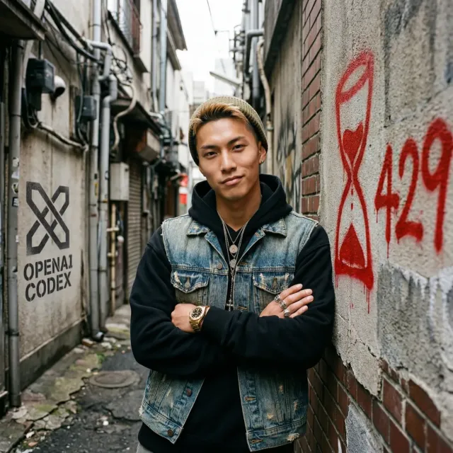
02 / TTR-002
Codex
03 / TTR-003
Claude Code
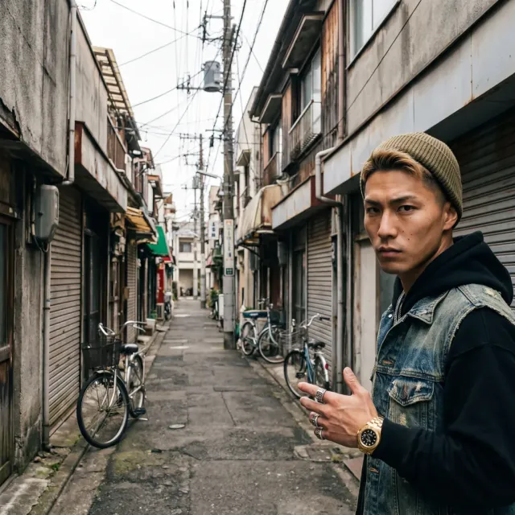
04 / TTR-004
Codex
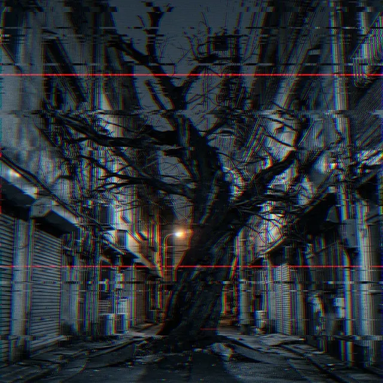
05 / TTR-005
Claude Code
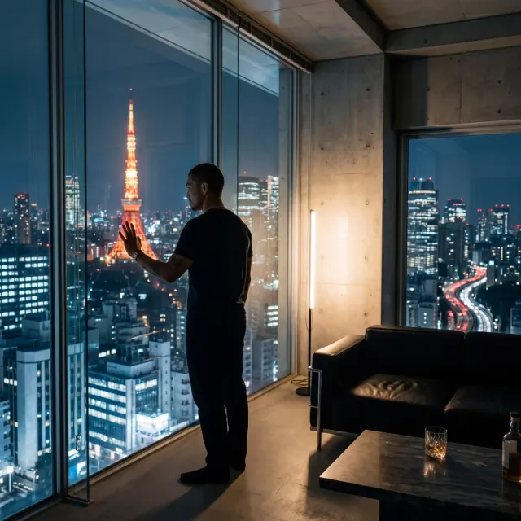
06 / TTR-006
Claude Code
07 / TTR-007
Codex
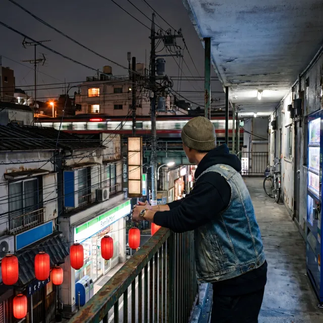
08 / TTR-008
Codex
09 / TTR-009
Claude Code
10 / TTR-010
Codex
11 / TTR-011
Claude Code
12 / TTR-012
Codex
generate-image.ts に imageSize: "4K" が抜けており、outpaint 出力が暗黙に制限されていた。13 / TTR-013
Claude Code
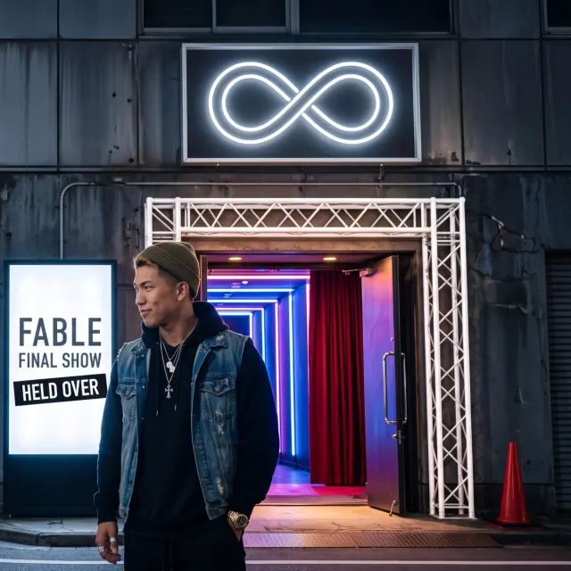
14 / TTR-014
Codex
15 / TTR-016
Claude Code
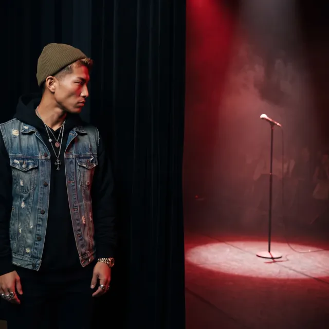
16 / TTR-015
Codex
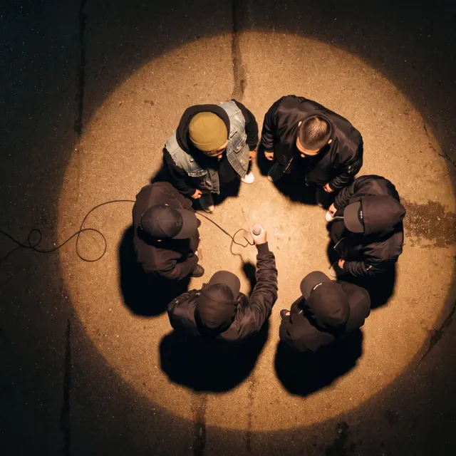
17 / TTR-017
Codex
--condition-on-previous-text False で解決。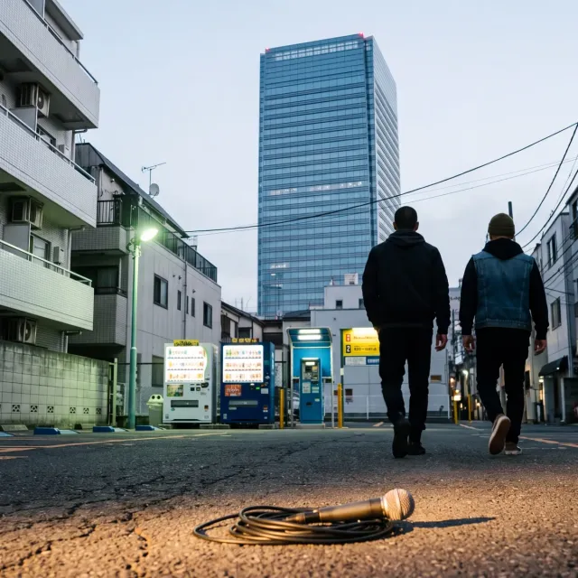
18 / TTR-018
Claude Code
--input、さらに「NOT jowly」で輪郭を安定させた。05 — Artwork & PV
アルバムカバーは7テイク。PV は Veo で制作し、企画そのものを作り直した。
コンセプトは、ボロボロの VS 興行ポスター。ビーフはとっくに風化している、という状態そのものを絵にした。右下の剥がれの下からのぞくのは「2人が並んでいた頃の写真」——最後まで聴いた人へのご褒美だ。
--input に渡す方式へ切り替え、顔は本人に。Album Playlist / 18 Tracks
06 — Liner Notes
このアルバムを作った道具立て。スキル6本、補助スクリプト10本、そしていくつかの外部サービス。すべて GitHub（techtalkjp/records） で公開している。
スキル名を押すと SKILL.md の中身を表示します。
SKILL.md